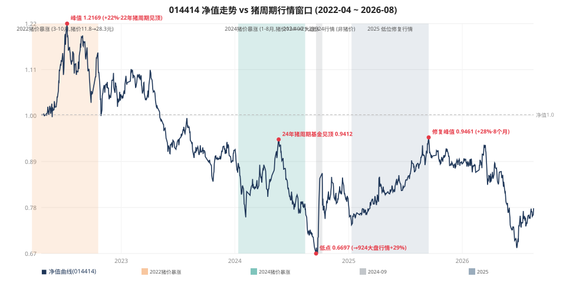
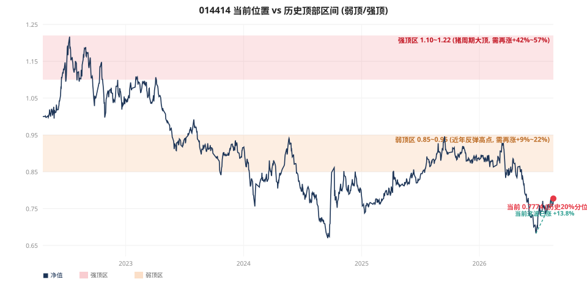

014414 投资体检报告
招商中证畜牧养殖 ETF 联接 A · 单行业主题基金深度复盘
数据区间 2022-04-19 ~ 2026-08-18
报告生成 2026-08-19
数据来源 本地 fund_history.db + 公开资料
测算币种 ¥
核心结论速览
27万周投(2026-04-29起)
+4,215 元
+1.56% / 16期 / 每期≈1.69万（已扣费）
区间净值表现
-9.28%
0.8570 → 0.7774（基金本身跌）
定投3年盈利概率
46.0%
历史每起点回测；一次性持有仅 0%
当前位置
0.7774
历史 19.7% 分位 · 已涨 +13.8%（弱顶区上沿）
年管理费+托管费
0.60%
贵于两只养老金 Y 份额（仅 0.20%）
一句话体检结论：014414 是一只单行业（畜牧养殖）被动指数联接基金。在 2022-2026 的猪周期下行窗口里，它自身区间累计 -22%，靠定投摊薄成本也只能做到「微利」；长期增长概率弱于宽基/红利类分散化基金。好消息是：当前处于历史低位（20% 分位），费率已含净值无需另付，行业正温和回暖。它适合作为「周期博弈」的小仓位，不宜作为养老金长期底仓——那类角色应交给你的 022982（A500）、022951（股息低波）两只 Y 份额。
一、标的与数据基础
- 基金：014414 = 招商中证畜牧养殖 ETF 联接 A（跟踪中证畜牧养殖指数，一篮子养猪/饲料/疫苗股）。
- 底层：通过投资 516670 畜牧养殖 ETF 间接持有，联接基金自身净值可直接用于测算（库内 516670 无净值记录，不影响）。
- 净值覆盖：库内 nav_history 含 014414 完整序列 2022-04-19 ~ 2026-08-18，最新净值 0.7774。
- 份额类型：普通 A 类（非养老金 Y 份额），无税优、费率偏高（见第三章）。
- 费用入账口径：净值已含每日计提的管理费+托管费；交易环节仅发生申购费（渠道打一折 0.12%）+ 赎回费（持有≥7天为 0）。
二、定投回测（27 万总投入，2026-04-29 起）
把 27 万作为定投总投入额，等比例分摊到各期（收益率与每期金额无关，仅随频率变化），期末市值以 2026-08-18 最新净值计；下表「净收益」列已扣打一折申购费 + 赎回费。
| 方案 | 期数 | 每期金额 | 累计份额 | 期末市值 | 总收益 | 收益率 | 年化(XIRR) |
|---|
| 每周·周三 | 16 | 16,875 | 353,484.58 | 274,798.91 | +4,798.91 | +1.78% | 11.59% |
| 每月·29日 | 4 | 67,500 | 352,628.21 | 274,133.17 | +4,133.17 | +1.53% | 8.82% |
对照：若 2026-04-29 一次性买入 27 万
买到 315,052.51 份 → 期末市值 244,921.82 元 → 亏损 -25,078.18 元（-9.29%）。
定投（周）比一次性多赚约 +29,877 元——下跌市里分批建仓省下的真金白银。
为什么基金跌 9.3%、定投反而赚？ 下跌过程中不断以更低净值买入，把平均成本摊到约 0.7639（< 期末 0.7774），经典「微笑曲线」。定投的价值是比一次性少亏，而非让下跌资产变赚钱。
三、费率解剖（库 funds.json + 公开资料核实）
| 基金 | 份额类型 | 管理费 | 托管费 | 年费合计 | 申购费(渠道) | 赎回费 |
|---|
| 014414 畜牧养殖A | A类 | 0.50% | 0.10% | 0.60%/年 | 0.12%（打一折） | <7天1.5%
≥7天 0 |
| 022982 A500 | Y类 | 0.15% | 0.05% | 0.20%/年 | 0.00% |
| 022951 股息低波 | Y类 | 0.15% | 0.05% | 0.20%/年 | 0.00% |
纠正直觉：你担心 022982/022951 长期费用高，其实它们是你持仓里最便宜的——都是被动指数联接 + 养老金 Y 份额（监管强制管理费托管费 ≤ A 类 50%、申购费打到 0）。真正该留意费用的反而是 014414（0.6%/年，贵 2 倍）。
扣费后净收益（27 万周投 16 期）
| 申购渠道 | 浮盈(扣申购·持有不动) | 赎回费 | 净到手 | 净收益 |
|---|
| 0.12%（打一折） | +4,470 | 255 | 274,214 | +4,214（+1.56%） |
| 1.2%（不打折） | +1,540 | 253 | 271,288 | +1,288（+0.48%） |
长期持有「慢刀子」：管理费+托管费复利侵蚀
| 持有年限 | 014414（0.6%/年）刮走 | 022982/022951（0.2%/年）刮走 |
|---|
| 10年 | ≈ 5.8% 的期末价值 | ≈ 2.0% |
| 20年 | ≈ 11.3% | ≈ 3.9% |
| 30年 | ≈ 16.5% | ≈ 5.8% |
机制说明：管理费+托管费按日计提、已含净值、不经你账户另扣。你交易明细里看不到这笔扣款，但短期「没赚头」的 -0.1~0.2 个点有它的份；30 年视角下 014414 比 Y 份额多刮走约 10 个百分点。Y 份额另有养老金税优（缴费抵税 + 领取仅 3%），现实价值常大于费率差。
四、分红影响（被忽略的真实回报）
| 基金 | 期内分红 | 说明 |
|---|
| 014414 | 无 | 累计净值 ljjz = 单位净值 dwjz，差额为 0 |
| 022982 A500 | 无 | 宽基通常不分红 |
| 022951 股息低波 | 有 | 2026-08-06 每份 0.005；红利再投多买 491.6 份 |
022951 分红的贡献：把它的周投收益从 -856 元（-0.32%） 抬到 -69 元（-0.03%），多赚 787 元、约 +0.29%——弱市里「分红发工资让你扛住」的效果。但 3.7 个月只有这一笔，力度有限；它历史累计分红 0.125/份（≈净值 7.8%）多在 4-29 起始日之前，拉长周期才显出价值。
五、三只持仓横向对比（27 万周投，同窗口 2026-04-29~08-18）
| 基金 | 区间涨跌(单位净值) | 浮盈(未计费) | 净收益(打一折+赎回费) | 期内分红 |
|---|
| 014414 畜牧养殖A | -9.29% | +4,470 | +4,214（+1.56%） | 无 |
| 022982 A500 | -0.36% | -3,204 | -3,460（-1.28%） | 无 |
| 022951 股息低波 | -3.98% | +184 | -69（-0.03%） | 有 |
反直觉发现：换成 A500 / 股息低波并没有更好——这个弱市窗口里三只都近似持平，014414 反而是唯一明显为正的（靠微笑曲线）。「没赚头」是 3.7 个月弱市窗口的共性，不是费率、也不是没算分红。但拉长到 5~10 年，分散化的两只胜率会显著高于单行业。
六、定投盈利概率实证（014414，历史上每个起点回测）
以「每期 1000 元、打一折申购费 + 末笔赎回费」跑遍 2022-04 起每一个可能的起点，看 1/2/3 年到期盈利的概率与金额分布。
| 持有期 | 样本数 | 盈利概率 | 平均收益 | 收益中位 | P10（差） | P90（好） | 平均期数 |
|---|
| 1年 | 811 | 33.4% | -3.83% | -5.32% | -13.6% | +7.7% | 53 |
| 2年 | 569 | 39.0% | -4.24% | -5.50% | -16.7% | +8.2% | 105 |
| 3年 | 326 | 46.0% | -2.70% | -0.44% | -10.7% | +3.2% | 157 |
绝对金额（每期 1000 元基准，收益率与金额无关，可线性缩放）
| 持有期 | 平均盈利额 | 盈利额中位 | 最差 | 最好 |
|---|
| 1年 | -2,032 | -2,819 | -11,115 | +8,921 |
| 2年 | -4,450 | -5,771 | -28,717 | +15,144 |
| 3年 | -4,245 | -688 | -29,604 | +12,612 |
定投 vs 一次性持有：胜率随年限的剪刀差
绿=定投；灰=一次性买入持有。定投胜率随持有期上升（摊薄成本捕捉微笑曲线后半段），一次性持有反而下降（越拿越深套）。
三点判断：① 定投改善胜率但仍偏弱——3 年仍 <50%，历史上超半数 3 年定投计划仍亏损；② 平均收益为负是趋势性下行问题，定投只能软化择时救不了趋势性下跌资产；③ 对比宽基文献（10 年 ~100% 胜率），单行业基金定投也是弱候选。
七、猪周期与基金行情（基金常「提前」猪价见顶）

橙/绿阴影为两轮猪价暴涨窗口；灰为 2024-09 大盘「924」行情（非猪价）；蓝为 2025 低位修复。红点标关键峰值。
| 行情 | 基金表现 | 猪价表现 | 错位关系 |
|---|
| 2022 猪周期 | 0.9943→1.2169
+22.4%，48天(1.6月)见顶 | 11.8→28.3元
(3→10月) | 基金 7月见顶，猪价 10月才见顶，提前约3个月 |
| 2024 猪周期 | 5-21 见顶 0.9412
→9-18 低点 0.6697
-28.9% | 13.4→21.2元
(1→8月) | 基金基本没吃到这轮猪价上涨，6-8月反在跌 |
| 2024-09 大盘 | 0.6697→0.86
+28.6%(20天) | 猪价在跌 | 924 政策牛，与猪肉无关 |
| 2025 修复 | 0.6697→0.9461
+28.2%(8.2月) | 低利润震荡 | 估值修复 + 猪价回暖 |
反常识规律：股票基金炒的是「未来猪价预期」，不是当下猪价。猪价刚启动、还没人注意时基金先涨；等猪价真暴涨、新闻铺天盖地，基金常在「卖事实」回落。想靠猪肉行情赚钱，要在猪价启动前布局；等「猪肉暴涨」上头条再去买，常买在阶段高点。历史上涨得最多最快的两段（924 大盘 +25%、2025 修复 +28%）都不是猪价驱动——这只单行业基金受大盘 beta 与自身估值修复影响，常比猪价本身还大。
八、顶部区间量化（涨多少算到顶）

红带=强顶区（猪周期大顶），橙带=弱顶区（近年反弹高点）。当前 0.7774 处于历史低位，但这波已从低点涨 +13.8%。
| 顶部类型 | 顶部净值带 | 相对前低涨多少见顶 | 见顶后回落 |
|---|
| 弱顶（近年反弹高点） | 0.85 ~ 0.95 | +12% ~ +17% | -8% ~ -13%（狠的到 -29%） |
| 强顶（猪周期大顶，如2022） | 1.10 ~ 1.22 | +22% ~ +28% | 大（2024-05 顶后 -28.8%） |
当前位置与距离测算：
- 当前净值 0.7774，历史分位仅 19.7%（处在历史最低约 20% 区间）。
- 这波反弹从 2026-06-25 低点 0.6829 算起，已涨 +13.8% —— 正好撞进「弱顶涨幅区（0.85~0.95）」上沿。
- 距离：到弱顶下沿 0.85 需 +9.3%；到弱顶上沿 0.95 需 +22.2%；到强顶 1.10 需 +41.5%；到 1.22 需 +56.9%。
「到顶」的真正意义是「不卖就坐过山车」：历史上几乎每次见顶后都大幅回撤（6%~29%）。2024-05 见顶后 -28.8%、2026-04 见顶后 -22.9% 都是活例子。比「涨多少」更靠谱的信号是猪价位置 + 净值分位。⚠️ 顶部无法精确预判，本区间仅为历史统计规律。
九、行业基本面（截至 2026-08-19，新闻/政策梳理）
① 能繁母猪去化
- 一季度末全国 3904 万头（环比 -1.4~1.5%，同比 -3.3%）；5 月末已连续 10 个月环比回落，较高点累计去化 4.6%。
- 但仍高于 3750 万头调控目标（约 100.1%）——去得慢、不彻底。
- 2026 修订《生猪产能综合调控实施方案》：保有量目标 3900→3750 万头；对 10 万头以上集团企业年度备案、出栏体重限 120kg、禁止投机性二育、淘汰低产母猪、暂缓补栏。
- PSY（母猪效率）已提至 23+，3750 万头就能顶原来 3900 万的产能——所以官方敢下调目标但仍供大于求。
② 猪价
- 轨迹：4/15 外三元 8.77 元/kg（2015 年来最低） → 5 月第二周 10.16 → 5 月末重返 10 元（10 天 +16.8%）→ 当前 8/14-15 约 10.8 元/kg。
- 区域分化：华东领涨（标猪收紧、惜售）；河南/广东回落（集中出栏/消费弱）；北方多地持平。
- 需求仍弱：屠宰开工率 <29%、鲜销率 81%、冻品库容 33%，季节性淡季，终端走货平平。
- 趋势：已完成筑底，进入「温和回升、窄幅震荡」；机构看下半年震荡偏强、中枢上移，但快速走牛反转概率低。
③ 二次育肥放量
- 政策明令禁止投机性二育；上半年栏舍利用率从 46% 降到 27%（非常谨慎）。
- 下半年两轮节奏（关键）：
- 首轮：7 月上旬集中补栏 → 8 月中—9 月中集中出栏（👉 就是现在这波正在释放的供给压力）；
- 次轮：9—10 月补栏 → 11—12 月出栏。
- 当前肥标差高位、大猪偏紧，养殖端压栏增重意愿强；二育是猪价短期波动的核心变量。
④ 储备肉（上半年托底，现在转轮换）
- 上半年中央收储密集：1 月 1.78 万吨、3 月 1 万吨、4 月 1 万吨、5 月 2 万吨 + 3 万吨，累计约 2 万吨 + 地方（广东、湖北）联动。
- 8 月 14 日转向轮换出库平抑波动（注意：不是收储，也不是「冬储肉」——当前 8 月是消费淡季，真正的旺季收储一般在四季度）。
- 四季度旺季若猪价过低可能再收储。
综合趋势判断：本轮是「温和回升」型周期，不是 2022 那种暴力行情。根因：去化慢 + 母猪效率高 + 需求弱（猪肉消费占比从 62% 降到 57.8%）。当前猪价 10.8 元/kg 仍在行业完全成本 12–13 元下方，养殖全面亏损，政策托底意图明确——但离「强猪周期」（猪价破 20）还差得远。⚠️ 关键提醒：你那 014414 基金常提前猪价见顶；现在猪价才 10.8（看起来没涨），但基金已从 6 月低点涨 +13.8%，进入弱顶区上沿——猪价没涨 ≠ 基金还能涨。
十、关键认知：出栏时间 &「快速走牛反转概率低」
一般猪要养多久出栏
- 商品猪育肥期（仔猪断奶→长到 110–120kg 出栏）：约 5–6 个月（现代规模养殖，仔猪 21 天断奶后育肥约 150–180 天）。
- 从母猪受孕→商品猪出栏：约 10 个月（妊娠期 114 天 + 育肥 5–6 个月）。
- 产能传导滞后约 10 个月——今天减能繁母猪，要 10 个月后猪肉供给才真正减少（2025 年 7 月母猪减产 → 按 10 个月推算 2026 年 5 月后供应才减量）。
这也是「反转慢」的底层原因：产能调整天然慢 + 去化不彻底 + 需求弱，强周期反转被拉长。
「快速走牛反转概率低」≠「大涨概率低」
这句话是中信期货 7 月 2 日研报原意，要拆成三词看：
- 反转：猪周期从底部进入完整上行周期（猪价持续大涨，如 2022 翻倍），区别于「反弹」。
- 走牛：进入牛市，即持续性、幅度大的上涨。
- 快速：在短时间内完成。
| 说的是哪种涨 | 机构看法 |
|---|
短期温和反弹 / 震荡偏强
（猪价 8.77→10.8 这种） | 大概率——主流共识「震荡偏强、中枢上移」 |
快速、持续、幅度大的牛市反转
（猪价破 20、基金涨 20%+，复制 2022） | 概率低 |
机构不是看空反弹，而是说：别指望 V 型暴力反转。本轮更可能是「磨底后慢慢爬、窄幅震荡」，而非 2022 那种 7 个月涨 140% 的强周期。这也与你前面那轮判断（当前已进「弱顶涨幅区 0.85–0.95」）吻合。